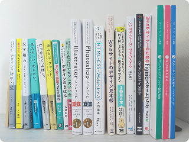
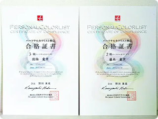
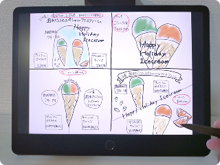
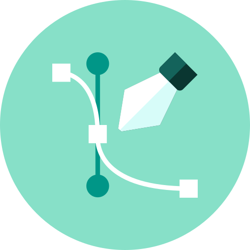
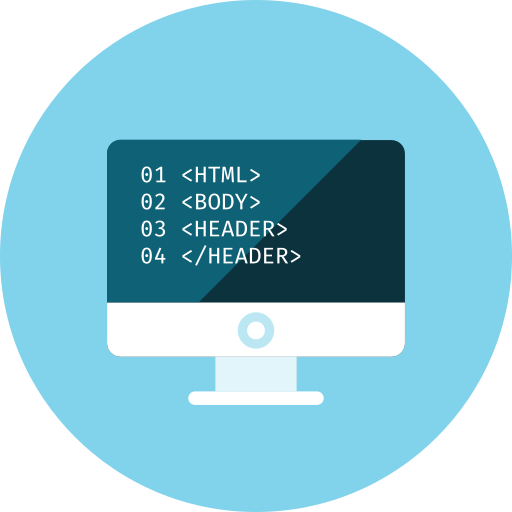
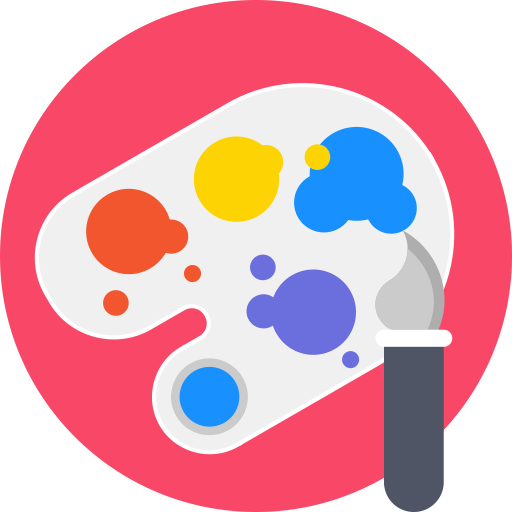

経歴
九州大学理学部 地球惑星科学専攻
地質・化石を学びに入学し、修士課程ではかたつむりの遺伝子解析をしていました。採集先から持ち帰り、ペットとして飼ったことも。
山口県の大手進学塾で4校舎運営
新卒で入社した会社で教育コンサルタント兼室長として、100件近くのご家庭と面談。生徒・保護者・アルバイト講師と密に連携を取りながら学習計画を組み立てていました。
色彩の魅力にハマりパーソナルカラリスト資格get
元々のファッション・おしゃれ好きが転じて、肌色に似合う色を極めるため勉強。色の持つ連想イメージを基に論理的に色選びが可能です。
結婚・子育て期間
3学年差の姉弟を育てています。子どもたちに何かに夢中になる姿を見せたくて、9年間育児サークルやコーラス、人形劇で全力で遊びました。この第2の青春期間で「子供たちにどんなメッセージを伝えるか」を考える視点が得られました。
フリーランスとしてECサイト運営に携わる
フリマアプリ～大手サイトまで、ネットショッピングでぱっと思いつくプラットフォーム計7つの運営に携わってきて6年目になります。リモートで地道にコツコツ作業するのが得意です。クリックに繋がる一貫したトップ画像作りを心がけており、タイピングの速さ・数字ミスが少ないのが強みです。
Webデザインの世界に飛び込む
毎日生活する中で目にしない日はないデザイン。一つ一つの設計に意味があり、目的が隠されていることを知って魅力を感じました。 お客さまの深い希望を引き出し、デザインに落とし込むデザイナーになれるよう精進の日々です。

デザインに迷ったときには初心に立ち返ります。学びにかける時間を惜しみません。

パーソナルカラリスト検定合格証書

アイスクリームバナー手描きラフ。参考バナーを基に、4パターン作成しました。
他にはこんなスキル、持ってます。
デザイン

- Illustrator
- ★★★☆☆
- Photoshop
- ★★★☆☆
- Figma
- ★★★★☆
- Canva
- ★★★☆☆
一通りの操作が可能です。ヒアリング内容に基に、課題解決に向けたデザインを行います。
色使い・余白・フォント選び・文字の大きさ…全てに意味を持たせたデザインづくりを一貫して心がけています。デザイン作成前の情報の収集・整理や手描きラフ作成など地道な作業も大好きです。
コーディング

- HTML
- ★★★★☆
- CSS
- ★★★★☆
- Javascript
- ★★☆☆☆
- jQuery
- ★☆☆☆☆
- VSCode
- ★★★★☆
- GitHub
- ★★★☆☆
HTML, CSSを用いて、デザインカンプを基にWebサイトを実装可能です。PC、タブレット、スマホなどどんな媒体からも見やすいようレスポンシブ対応可能です。
JavaScript,
jQueryを使った動きのあるサイトについてはご相談ください。
使用ツール＆その他

- Google スプレッドシート
- Chatwork
- Zoom
- Google Meet
オンライン、リモートでの業務委託を請け負って6年目になります。遠方でのミーティングや資料まとめ、お任せください。
アメリカに1年留学経験があります。英語には抵抗ありません。
★色彩検定受験予定（2026年11月）